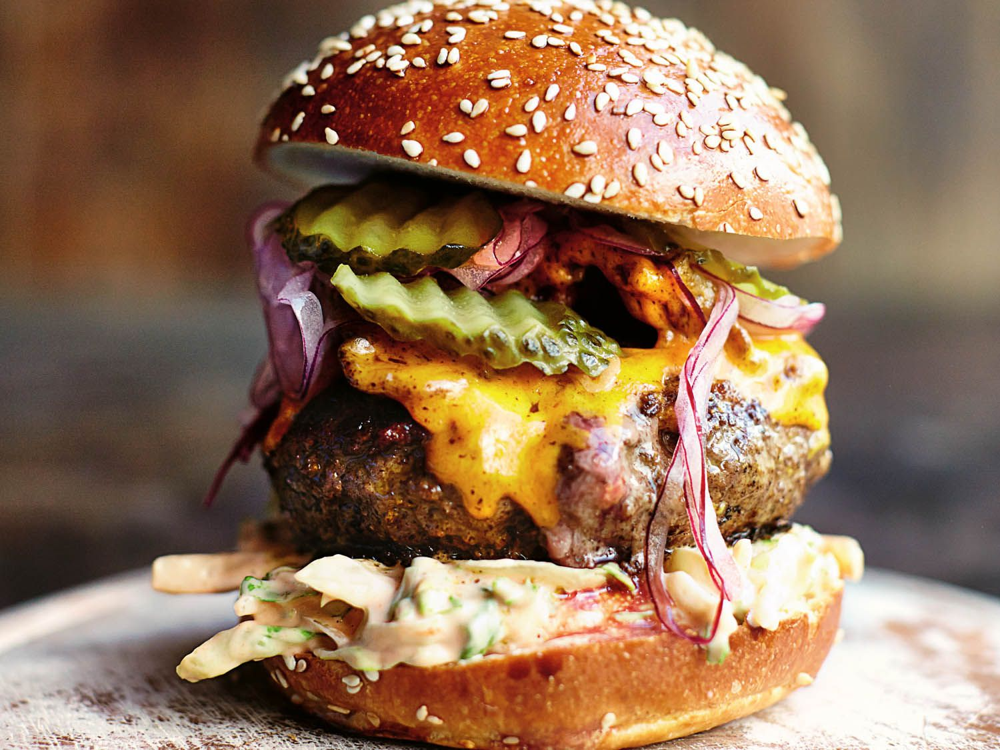

Burgers

Thick Juicy Burger
When you bite into this burger, you will know why this is called the thick juicy burger. Stuffed with some delicious cheddar cheese, every bite is an explosion of flavor.
The recipe is also very customizable to your preferences. If you don't like french fries, replace with asperagus!
Ingredients
- Minced beef
- An egg or two
- A little bit of onions
- A little bit of mushroom
- A little bit of bell peppers
- choice of cheese for stuffing
- Burger bun
Steps
- Mix the meat with the egg, some flour, salt, pepper and some chili flakes
- Shape about 60-70g of meat into a patty shape
- Spread out a bit of cheese of your choice in the middle
- Shape another 60-70g of meat into a patty shape, and place on top of the cheesy patty
- Close the edges together sealing the cheese inside
- Heat up a frying pan and pour a teaspoon of oil
- When pan and oil is hot, place cheese-stuffed patty on the pan, cooking on each side for 4 minutes
- Voila, you're done!